Know Thyself
The Man Who
Set the Table
31 March 1978 · 1:28 AM · Los Angeles, California
Astrology, Human Design and the Gene Keys, read as one design rather than three. Two pages: the long read, and the blueprint to check things against. Lenses, not verdicts.
One
The Reading
Thirteen chapters across three movements. The Design · The Living of It · The Deep Water, with a field guide and the full appendix.

Two
Quick Reference
The blueprint on one page. Natal wheel, Human Design mechanics, the Gene Keys spectrum, and the seven places all three systems name the same thing.